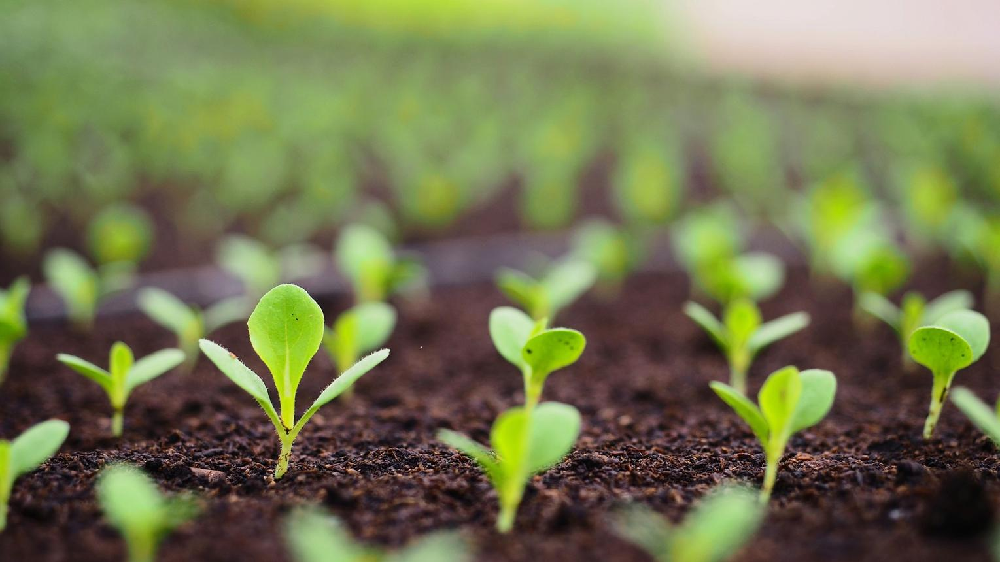
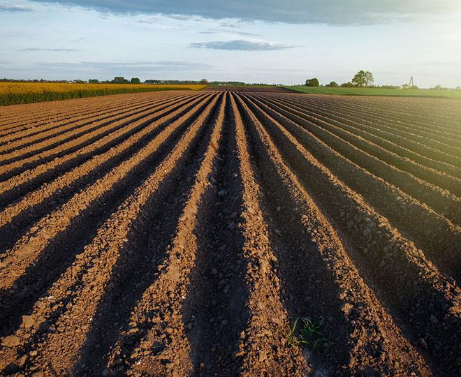

01 / CROP PRODUCTION
Crop planning
Understand crop selection, seasonal planning, spacing, planting and routine field observation.
WHAT WE SHARE
Introductory support topics for planning and managing a farm.

Understand crop selection, seasonal planning, spacing, planting and routine field observation.

Explore soil testing, composting, mulching, drainage and careful water use.

Learn about record keeping, budgeting, labour planning and monitoring farm activities.

Review harvest timing, sorting, clean handling, storage and reducing avoidable losses.